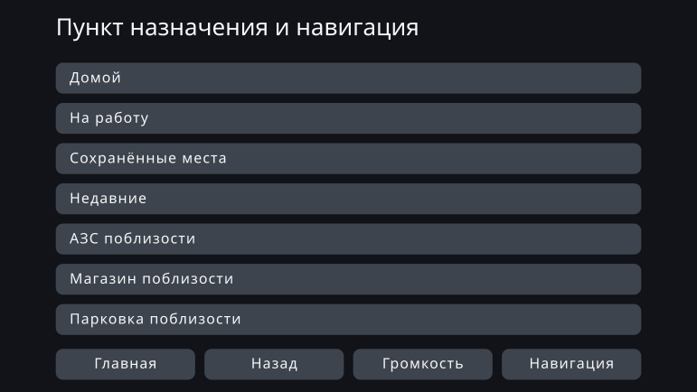
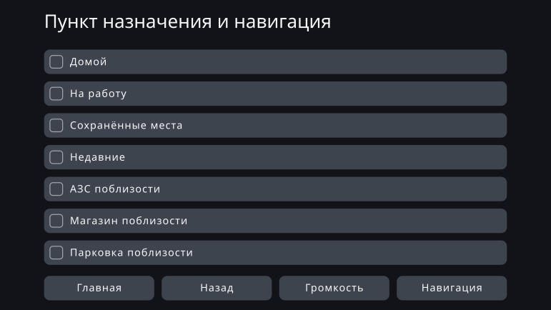

Personal Fit UI - Индивидуальная оптимизация интерфейса с использованием дизайна по ограничениям
август 2026
Обзор
Все пользуются одним и тем же интерфейсом одинаково. Эта работа отходит от такой предпосылки массового производства и спрашивает, нельзя ли вместо этого порождать интерфейс под когнитивные, сенсорные и физические особенности отдельного человека.
Целью был не экран, который непрерывно меняется по ходу использования вслед за ситуацией. Речь о механизме, который считывает особенности человека в момент начала использования и заранее порождает подходящий ему интерфейс, оставаясь в рамках ограничений безопасности и доступности.
В этой работе я применил подход, который называю дизайном по ограничениям. Опираясь на литературу и стандарты, человек проектирует направления, в которых можно двигаться, и границы, которые нельзя переходить. Внутри этой рамки ИИ выбирает конкретные значения и формулировки, а порождённый результат проверяется на то, не нарушает ли он рамку.
В PoC предметом стала автомобильная навигация: интерфейс порождался для тринадцати персон с разными особенностями. Заметных внешних изменений почти не возникло. Зато сам процесс записи ограничений в проверяемом виде показал, где для индивидуализации остаётся простор, а где его съедают ограничения.
Что значит выдать всем один интерфейс
Большинство продуктов сегодня проектируются исходя из массового производства: один интерфейс должен покрыть как можно больше людей. Даже там, где можно изменить размер шрифта или число отображаемых пунктов, подходящее состояние приходится находить и настраивать самому пользователю.
Для очень многих это работает. Но «подходит многим» и «подходит всем» — не одно и то же. Даже продукт, отвечающий всем общим стандартам проектирования, оставляет людей, которым этим интерфейсом пользоваться трудно.
Та же структура видна и в оценке автомобильных интерфейсов. Приёмочная процедура американской NHTSA по отведению взгляда во время движения не требует, чтобы критерию соответствовали все испытуемые. Задача считается пройденной, если критерий выполняют 21 из 24 испытуемых: то, что часть людей его не выполнит, заранее заложено внутрь самой процедуры. Материал, поданный автопроизводителями регулятору, идёт дальше: в нём сообщается, что примерно один человек из шести устойчиво отводит взгляд дольше на нескольких задачах подряд. Этот материал подан теми самыми производителями, которых регулирование касается, и просил о смягчении критерия. Здесь же предлагается не смягчать критерий, а за счёт индивидуализации увеличить число людей, способных ему соответствовать.
Смысл индивидуализированного интерфейса не в том, чтобы у всех экран стал непривычным. Он в том, чтобы ввести людей, которых единый интерфейс терял, в область, где они могут им пользоваться и управлять безопасно.
До сих пор стоимость проектирования отдельного интерфейса для одного человека была нереалистичной. С тех пор как ИИ можно включить в сам процесс проектирования, эта предпосылка начала меняться.
Автомобильная навигация как предмет
Предмет этой работы — не автомобильная навигация, а индивидуализированный интерфейс. Навигация выбрана как один пример, на котором можно проверить его возможности и пределы.
Автомобильный интерфейс несёт жёсткие ограничения: ограниченный экран, очень короткое время взгляда, безопасность каждого действия. Перед выпуском он проверяется как единый интерфейс, которым может пользоваться большинство, — и тот же самый интерфейс достаётся тем, кому это решение не подходит.
Если индивидуализация состоится в столь жёстко ограниченной области, идею дизайна по ограничениям можно проверить конкретно. И наоборот, возможно, что ограничения почти не оставят ИИ свободы. Предмет позволял наблюдать и то и другое.
В Японии по состоянию на 2026 год сосуществуют модели с обновлением по воздуху и обычные штатные навигационные системы, обновление для которых не предусмотрено. К тому же, даже когда картографические данные обновляются, базовая структура интерфейса не обязательно перепроектируется снова и снова после покупки. В этом PoC предполагается система, интерфейс которой после начала эксплуатации обновляется нечасто.
Сделать индивидуализацию тем, что можно порождать
Дизайн по ограничениям — это когда рамка задана чётко, а внутри неё ИИ может двигаться гибко, улавливая нюансы. В отличие от параметрического механизма, который достаёт значения из готовой таблицы, здесь проектируется сам диапазон решений, доступный ИИ для поиска.
Научные данные не всегда доходят до конкретной цифры. Иногда они задают только направление: сделать крупнее, показать меньше. Там, где значение определено, оно вычисляется как правило; там, где известно только направление, конкретику выбирает ИИ в пределах допустимого. Не давать этому различию размыться — тоже часть механизма.
Определение когнитивных измерений
Осями служат не диагнозы, а особенности, связанные с удобством пользования: рабочая память, устойчивость к отвлекающим стимулам, зрение и слух, моторика пальцев.
Таблица соответствий
Связывает особенности пользователя с параметрами интерфейса, которые следует сдвинуть: какая особенность, что и в какую сторону меняет — с обоснованием.
Научные данные и стандарты
Собираются критерии безопасности, стандарты доступности, результаты когнитивной науки и общие принципы проектирования интерфейсов.
Набор ограничений
Условия, которые обязан соблюдать любой порождённый результат. Не декларации, а запись в форме, позволяющей проверить: выполнено или нарушено.
Пространство проектирования
Всё, что интерфейс может варьировать: размер шрифта, зоны нажатия, число отображаемых пунктов, иерархия информации, уведомления, лексика, порядок, группировка. Таблица соответствий задаёт направление настройки, набор ограничений убирает недопустимые решения.
ИИ доводит до конкретики внутри рамки
Из оставшейся свободы он выбирает значения, лексику, порядок и группировку. Отдельная проверка подтверждает соответствие рамке, и на выход идёт только тот индивидуализированный интерфейс, который удовлетворяет всем условиям.
PoC: интерфейс для тринадцати персон
Для PoC были подготовлены тринадцать персон с разными сочетаниями особенностей. Они не воспроизводят реальное распределение пользователей: это узлы проверочной сетки, где особенности расставлены намеренно, чтобы понять, какая из них меняет интерфейс.
Для каждой персоны общий единый интерфейс взят как before, а интерфейс, порождённый по её особенностям, — как after.
Случай, где почти ничего не изменилось
PS-01 — эталон (средний возраст, типичный профиль)
Эта персона по всем когнитивным, сенсорным и физическим особенностям находится в типичном диапазоне. После индивидуализации шрифт стал чуть крупнее, но число отображаемых пунктов, расположение и размер зон нажатия почти не изменились.
Единый интерфейс (before)

Индивидуализированный интерфейс (after)

Случай, где изменение видно
PS-12 — средний возраст, низкая моторика пальцев (сенсорика и когниция типичные)
Эта персона совпадает с PS-01 по возрасту, сенсорным и когнитивным особенностям; ниже только моторика пальцев. В after зоны нажатия увеличились, а число пунктов на экране сократилось с семи до четырёх. Остальные перенесены на следующий экран — именно это и обеспечивает размер каждой отдельной цели.
Единый интерфейс (before)

Индивидуализированный интерфейс (after)
Литература указывает нижнюю границу, которой должна отвечать зона нажатия, и направление, в котором её увеличивать при низкой точности управления. Но она не определяет однозначно, насколько увеличить её именно для этого человека. Эту неопределённую часть ИИ и довёл до конкретики в пределах ограничений.
Что дал PoC
Явно заметное изменение подтвердилось лишь у PS-12 — одной из тринадцати. У большинства персон единый интерфейс before уже работал достаточно хорошо; выигрыш от индивидуализации почти не проявился, по крайней мере в форме, различимой по виду экрана.
У PS-12 индивидуализацию удалось показать наглядно, но изменение такого масштаба достижимо и через настройки отображения и доступности в существующих продуктах. То, что подходящее состояние можно дать с самого начала, без настройки пользователем, само по себе ценно. Однако нельзя сказать, что родился новый интерфейс, который мог предложить только ИИ.
Я не стал заключать из этого результата, что индивидуализация с помощью ИИ удалась.
Почему разница не возникла
Причина в том, что пространство проектирования, удовлетворяющее ограничениям, оказалось узким.
В автомобильном интерфейсе множество нижних и верхних границ, продиктованных безопасностью. Шрифт и зоны нажатия должны быть не меньше определённого размера, а на объём информации на одном экране есть верхний предел. Если применять их одно за другим, у ИИ остаётся совсем немного решений на выбор.
Многое из того, что ИИ довёл до конкретики, в нынешнем масштабе тоже укладывалось в то, что человек может решить один раз и закрепить небольшой таблицей соответствий. Это не значит, что ИИ был не нужен: он заполнял конкретные значения, которых литература не даёт. Но для поиска оставшихся вариантов было слишком мало.
Зато в переформулировании лексики свободы оставалось много. Только эти различия плохо видны как изменение композиции экрана: область, где человек мог распознать ценность, и область, которую не выразить правилами, не совпали.
Результат проявился в рамке, а не в интерфейсе
Наибольший результат этого PoC возник не на этапе порождения интерфейсов, а раньше — на этапе проектирования ограничений. По мере того как стандарты и литература записывались как машинно проверяемые условия, в самой рамке обнаружилось несколько несогласованностей.
- Разные стандарты задавали для одного и того же элемента интерфейса разные нижние границы.
- Условию «применяется только во время движения» негде было разместиться в спецификации.
- Две по сути независимые оси проектирования были сведены в одну, из-за чего ограничения отсекали почти все варианты.
- ИИ недостаточно ясно сообщили, какое ограничение управляет каким выходом, и в решения попадали не относящиеся к делу условия.
- Решения, которые следовало оставить ИИ, были зафиксированы на стороне реализации, и дизайн по ограничениям сближался с обычным движком правил.
По каждому пункту ИИ обнаруживал несогласованность и указывал соответствующее место, человек принимал решение, и ограничение исправлялось.
Иначе говоря, результат этой работы состоит не столько в том, что ИИ создал новый интерфейс, сколько в том, что в обмене с ИИ была проверена и обновлена сама рамка, из которой рождаются интерфейсы. Роль ИИ в дизайне по ограничениям не сводится к порождению готового результата. Она ещё и в том, чтобы до порождения найти, где правила сталкиваются друг с другом и где проектная возможность оказалась стёрта без чьего-либо намерения.
Дальнейшая работа — рамка чёткая, внутри просторно
От ИИ в дизайне по ограничениям ожидается не извлечение готовых значений из таблицы. Ожидается, что, отсеяв ограничениями заведомо неподходящее, он из множества оставшихся возможностей предложит решение с наибольшей вероятной обоснованностью — или покажет вариант, до которого человек заранее не додумался бы.
В этот раз такой эффект проявился недостаточно. Не потому, что не было столкновений, а потому, что пространство проектирования, удовлетворяющее ограничениям, было узким, и выбирать «более подходящее» или «новое» решение почти не имело смысла.
Следующий вопрос — не о том, полезен ли ИИ. Он такой: начиная с какой ширины пространства проектирования возникает эффект, на который способен только ИИ?
Для следующей работы я выберу предмет, где безопасность сохраняется, но остаётся несколько допустимых решений, а различия, не выразимые правилами, человек тоже способен признать ценностью. Рамка задаётся чётко. Но внутри неё оставляется ширина, достаточная для поиска ИИ. Именно это сочетание превращает дизайн по ограничениям не в простую автоматизацию, а в метод проектирования эпохи ИИ.